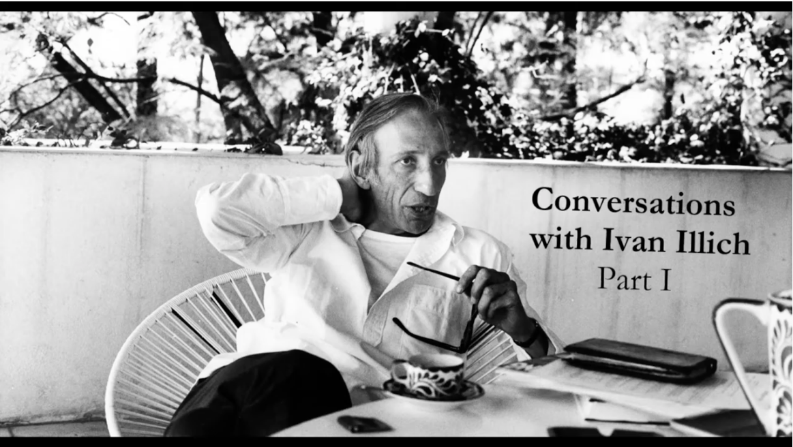

I. Introduction
Owing to quite a bit of recent hoopla about him, I’ve recently been reading Ivan Illich. Like the Molière character who discovers he’s been speaking prose his whole life, I discover I’ve been thinking a little like Illich for some time. While Illich’s diagnosis garnered plenty of attention and adherents at the time, his proposals for change were sufficiently revolutionary that they left little trace on reality. But while Illich’s focus was on radical critique, mine has been on concrete steps one might take to address the problems.
Illich’s critique in his most famous and genre defining book, Deschooling Society, is radical indeed. He thought a great deal of schooling simply pacified students to become economic inputs. And his wider purpose wasn’t just the familiar idea that education should be more in line with the liberal ideal, less like a factory and more experiential and/or ‘problem based’ etc etc etc. He argued that a great deal of it wasn’t really education at all — that it was role playing education. (I know what he means. Japanese was one subject my son did throughout primary school. He learned to count to 20 and not much else.) Paul Graham thinks similarly, though with very different emphases.
Illich’s intriguing proposal was to disestablish education by analogy with the disestablishment of churches. All very interesting, but, at least from what I’ve read, he wasn’t very specific about how this would work the wonders he claimed for it. And so people could be left with the impression he was against education, or for a lot less of it — which jars somewhat with his own erudition.
Be that as it may, this essay is just a few thoughts arising from my new dalliance with Illich — like my dalliances with Michael Polanyi and John Macmurray (though at much less length). In the next section I’ll give you a very brief introduction to Illich and then in the final section go on to try to demonstrate my claim.
II. What Illich was about
https://www.youtube.com/watch?v=HndV87XpkWg
Friend and biographer of Ivan Illich’s, David Cayley, uses a marvellous expression of Walter Benjamin’s to claim that two decades after his death, Illich’s ‘hour of legibility’ has arrived. Whether or not he gave us the answers, if one looks around we can see many of the problems Illich warned us about having metastasised further. Who knew one of the finest institutions of the last millennium — academia — would collapse quite so quickly? Not me.
Illich’s concerns were similar to Michel Foucault, most particularly the grand issue of our time and the reason the West continues careening towards oligarchy — the way power has come to be exerted through discursive structures. However, I find Illich much more congenial than Foucault. Foucault’s late lectures on the Greek political concepts of parrhēsia and isegoria are perfectly straightforward — mundane even — while having some arresting insights in them. But I often find Foucault incomprehensible and even if I fight my way to some fragile comprehension, it’s difficult to use his ideas because people find them so difficult and those that do use them have a reputation (often deserved) as intellectual poseurs. Also, Illich’s values and what he’s fighting for are clear and, for me, congenial. It’s much less clear where Foucault’s sympathies lie.
Be that as it may, Illich first came to note for his critical contributions to the development agenda after WWII. He argued —presciently — for the dignity of subsistence. This wasn't because he didn't want to lift the living standards of the poor, but because he felt that the methods being used to do so would not only be ineffective, but that they would also destroy people’s culture. And that, in doing so they would not lift living standards but rather turn subsistance from something that was enculturated which therefore retained some dignity, into shameful privation. What had been members of poor communities would become atomised into a sea of people who would be taken for loafers and miscreants as they eked out their living in the urban underclass.
If this was the canonical form of oppression by professional knowledge, Illich subsequently came to see the structure of professions generally as having its origin in the ideologies and practices of the medieval Catholic Church.
III. Addressing Illich’s concerns
Ever since I chaired The Australian Centre for Social Innovation (TACSI), it struck me that not nearly enough was made of our Family by Family program. Rather than banish professional knowledge on behalf of the life world of the vernacular, it tries to put to proper use by taming it for the lifeworld. In other words, it mobilises professional knowledge “as midwife not obstetrician”. Rather than simply relying on the families to work it out, they are coached in their mentor relationship through the program by a trained coach. So Family by Family is a practical response to Illich’s concern about professional domination.
(A stylised fact from the literature on mental health when I read it a few years ago was that professional and peer support were equally effective in promoting mental health (yes this is an impossibly crude finding I know, but there you go.) Still, I couldn’t help thinking to myself that the professional services had a lot more resources and organisation put into them. Family by Family developed a process of coaching peers and this could be developed further.)
I’d like to see us develop ‘interfaces’ between professional knowledge and the lifeworld in all the professions. Today professions hold all the aces. They’re ‘regulated’ and in so doing ‘established’ in the sense Illich highlighted regarding the church’s establishment. That is, they enjoy a monopoly over services or at least official recognition ahead of alternatives (and that’s pretty much a defacto monopoly in a credentialised world). Accordingly where someone receives services from a psychotherapist, a lawyer, a doctor there would be an institution of users of those services who had gained sufficient experience and/or training to be peer guides for others who sought their help in navigating the profession.
I think each profession and the services it delivers needs ultimately to be governed by a body that ultimately represents its users. How would one identify who would represent users? Currently interest groups are typically constituted by voluntary associations with paid membership. Particularly in the case of organisations claiming to represent a large and diffuse class, the membership is a skewed sample of the target group. Choice, the leading consumer group in Australia boasts an impressive membership of over 170,000. But it’s less than one per cent of consumers whom it claims to represent. I think one needs to start with representative sampling from the user/beneficiary body. One could then combine this with peer training and mechanisms that might encourage a genuine meritocracy of concern and expertise to develop within the group.
Secondly, the current dysfunction of our politics arises from a similar problem — the domination of a professional political class. For that reason, I’ve been keen on introducing representation by sampling into our constitution — as already exists via juries in our legal system. The more I've thought about it, the more profound I've found its appeal. My own reference to the Greek political principle of isegoria or equality of speech seems cognate with Illich’s idea of defending the vernacular world.
To put the point briefly, electoral politics necessarily involves competition and this is almost invariably within an increasingly professionalised elite. Selection by sampling is not. Electoral campaigning has been so relentlessly optimised for effectiveness that today the culture of politics is increasingly uninhabitable. By contrast, citizens’ juries play to our evolved nature as the species that evolved to survive on the African savannah by solving problems together. No sooner have a group been selected than they begin to generate their own culture adapted to their deliberative task. It puts me in mind of the passage in Matthew “where two or three are gathered together unto my name, there am I in the midst of them”, a passage that to which Illich often referred.
I support your statement: "I think each profession and the services it delivers needs ultimately to be governed by a body that ultimately represents its users." I would more widely interpret "users" to include consumers, suppliers and those in the host communities to create a bottom-up stakeholder economy. It may not be as Illich proposed as it would follow the self-regulating, self-managing and self-governing processes found in all living things. This ecological form of governance would introduce dual paradoxical processes that Harvard cell biologist Donald Ingber described as "Tensegrity" or "The Architecture of Life". It would not involved modern religious belief systems like "economic value", "prices", "costs" or "hierarchies" that undermine democracy. I would be consistent with the 2009 Nobel Prize acceptance speech by Elinor Ostrom that complex economic problems can be solved without markets or State. Instead universal wellbeing income support would privately provided from social dividends diverting overpayments of investors to stakeholders. Such a reshaped form of capitalism could be introduced by tax incentives described in my 1975 book: Democratising the wealth of nations and in my essays posted last week in London on "De-tax yourself for eternal wellbeing" as posted at: https://www.longfinance.net/news/pamphleteers/de-tax-yourself-eternal-wellbeing/ and my co-authored article Indigenous decision-making can sustain democracy - and humanity, posted at: https://www.onlineopinion.com.au/view.asp?article=21687&page=1
Thanks, Nicholas.
Indirectly commenting on Illich.
There is a scale dimension (centralisation versus decentralisation) to your Family by Family model as well as a practical dimension (strategic versus operational). There is no consistent application of a theory of scale in our current federation, in which for example the national government hands out bikkies for railway station car parks which has to be either a local government or a state transport department responsibility. For another example, when dysfunction was alleged in central Australian desert communities, the Commonwealth sent in the army as there was no structure of local governance that they trusted.
Then there is a large notional gap between the perspectives of operational people – street level bureaucrats – and educated people who have gone straight from school to university to a strategic policy career. They speak different languages, read different media.
Chris Nobbs' recent column in The Mandarin https://www.themandarin.com.au/163727-the-pacific-step-up-impositions-on-norfolk-island-cant-be-achieved-without-mutual-respect/ describing the tin ear that the Commonwealth has for sensibilities of small island communities gives further examples of the absence of nuance in both scale and practicality.
An interesting paper was delivered by Dr John Golledge to a small workshop held in Cairns by The Royal Society of Queensland in 2016. https://www.royalsocietyqld.org/initiatives/community-health/. The paper highlighted the improved results from prescribed therapy when patients were given personal, face-to-face support. (Like the Yunus micro-finance model - reliance on the community to exercise quality control). It could be said to confirm the validity of one aspect of your Family by Family model.
Two common responses to the challenge of distributing power - doing away with states and outsourcing - are dry gullies.
The implications from Illich and F by F are that we need to develop better models of local and regional governance that localise decision-making while not neglecting economies of scale and ensuring probity.
Nicholas,
Thanks for sharing this piece. I've known of Illich by name for a long time, but I've never read him. If you share the piece further, I'd recommend a some more information about Illich's background (which I'd not known of; I'd thought he was from Latin America). Also, noting his (long)J years of activity would also provide some useful context about his projects.
I appreciate your thoughts about "citizen juries" and other forms of decentralized, less elite-driven means of decision-making. I heartily agree that this is a path we should be traveling down further.
This comment was e-mailed to me by John Burnheim.
I heartily endorse John Burnheim in lamenting the lack of respect for expertise in our modern political discourse. I've just penned a column for The Mandarin expressing the awe I felt at the depth of scholarship on display at a recent conference. In virtually every discipline, there is a wealth of new knowledge and debate that seems to pass our political leaders by.
There is however a risk in relying on single-discipline professional groups and even more so, professional institutions to bring expertise to the table. Is the AMA, for example, an adequate forum for bringing medical knowledge into public policy? One of the services/disservices that this non-economist thinks economics has brought to recent discourse is the concept of regulatory capture by a professional body. It's true up to a point, and there are many examples such as the capture of forestry policy by logging-friendly foresters and capture of medical registration by exclusive colleges, but it has led to a general disparagement of expertise and replacement of people who know what they're talking about with generalist neoliberals.
One excellent solution is the citizens' assembly that John (and Nicholas) advocate; but we also need better, cross-disciplinary forums for assembling expert knowledge. Forums that bring together members from different disciplines can smooth out the ideological enthusiasms that grip some professional institutions from time to time.
The "ridiculous price" for the hardback copy of Cayley's book is well worth the price if you happen to prefer the pleasure of a hardback. Some things are matters of choice despite "professional" opinion. A good ticket to a live performance at Lincoln Center in Manhattan can go for more than 300 buckos. You can save a lot of moola by watching a performance on your I phone for $5. So there is a choice 60 shows on ur I-phone or one at the Met. My money is on the real thing. A book in hand is worth twenty, (sixty?), in the bush.